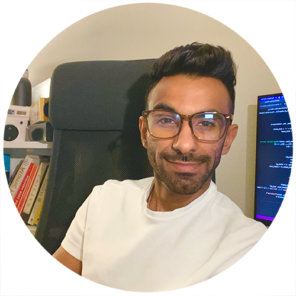

|
I am a senior Computer Science student at the School of Computing and Augmented Intelligence at Arizona State University, Tempe. I am currently working as a research intern with Prof. Wolfgang Heidrich in the Computational Imaging Group at KAUST. At Arizona State University, I am working with Prof. Suren Jayasuriya in the Imaging Lyceum Lab. Before that, I was also a summer research intern with Prof. Peter Wonka at KAUST.Email: last_name.first_name@gmail.com / CV / Twitter / LinkedIn |
 |
 |
Ali Almuallem, Albert Reed, Suren Jayasuriya In-progress project, 2022 - 2023 This is an on-going project with potential publication later in 2022-2023. A pre-print will be available by mid-December 2022. |
 |
Ali Almuallem, Albert Reed, Suren Jayasuriya Fulton Undergraduate Research Initiative (FURI), 2022. Project page / Poster We proposed a method to overcome the memory bottlenick when working with INRs for Computed Tomography reconstruction tasks. |
 |
Ali Almuallem, Wolfgang Heidrich In-progress project, 2022 - 2023 This is an on-going project with Prof. Wolfgang Heidrich and KAUST |
|
- 2022, DEC: I was selected for and awarded the FURI research funding for spring 2023. - 2022, OCT: I was selected to participate in the Stanford SERGE program! - 2022, MAY: I started a research internship with Prof. Wolfgang Heidrich. - 2022, APR: I presented my work on batched rays CT in the FURI symposium. Project | Image - 2021, DEC: I was selected for and awareded the FURI research funding for spring 2022. - 2021, AUG: I joined the Imaging Lyceum Lab at ASU to work with Prof. Suren Jayasuriya - 2021, JUN: I was selected to participate in the SSI summer research internship with Prof. Peter Wonka at KAUST. - 2020, AUG: I joined Arizona State University for my undergraduate degree in Computer Science. - 2020, MAR: COVID-19, lockdown, remote instructions, and a surge in uncertainties! - 2019, AUG: I joined Seattle Central College to finish my math, physics, and basic general classes. |
|
- EEE598: Physics-based Computer Vision (Grad-level) - EEE598: Remote Sensing and Synthetic Aperture Imaging (Grad-level) - CSE499: Independent research in Computed Tomography reconstruction using Implicit Neural Representations. - CSE494/570: Advanced Computer Graphics (Grad-level). |
|
- First Principles of Computer Vision - Specialization, Columbia University - Artificial Intelligence with Python Nanodegree, Udacity |

Above 3500M, Kilimanjaro mountain, Tanzania . June 2019. (c) Ali Almuallem.
|
Website theme by Jon Barron |